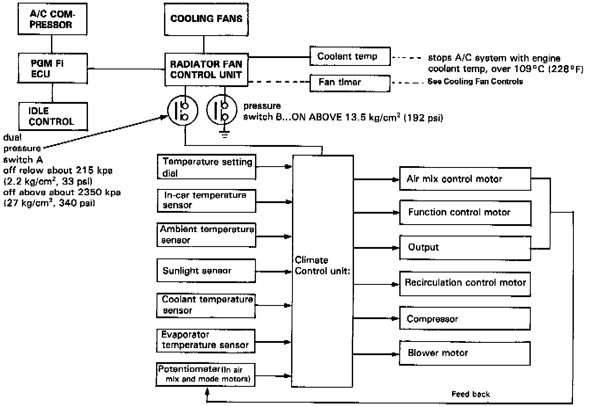
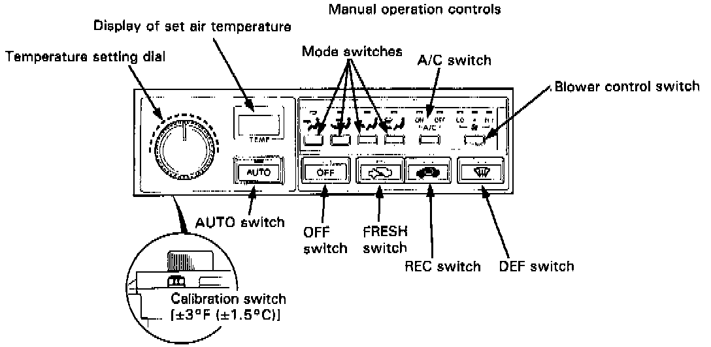

Climate Control System
Climate Control (Coupe Only)System and Control Unit Description

The climate control unit receives the input data sent by the sensors, the temperature setting dial and the potentiometers to decide the outlet air temperature, volume and direction.
Control Panel:

NOTE:
- The calibration switch can raise or lower the set temperature by ± 3°F (1.5°C) in relation to the digitally-displayed temperature.
- Use of the DEF switch:
- If the DEF switch is pushed in the AUTO mode, the control unit selects the FRESH position, turns on the A/C system and regulates the blower speed automatically.
- If the DEF switch is pushed in the OFF mode, the blower speed must be regulated manually.